El Modelo Minimalista (MM)
MM: Autómata Celular
Ocupación
Periodo De Retorno
Periodo de Retorno (II)

MM: Soluciones Algebráicas
Configuraciones, Cadenas de Markov
Matriz de Transición, $ N = 4 $
\[ M = \begin{pmatrix}
1/4 & 1/4 & 1/4 & 1/4 & 0 & 0 & 0 & 0 \\
0 & 2/4 & 0 & 0 & 1/4 & 1/4 & 0 & 0 \\
0 & 0 & 2/4 & 0 & 1/4 & 0 & 1/4 & 0 \\
1/4 & 0 & 0 & 1/4 & 0 & 1/4 & 1/4 & 0 \\
0 & 0 & 0 & 0 & 3/4 & 0 & 0 & 1/4 \\
0 & 1/4 & 0 & 0 & 0 & 2/4 & 0 & 1/4 \\
1/4 & 0 & 0 & 0 & 0 & 0 & 2/4 & 1/4 \\
1/4 & 0 & 0 & 0 & 0 & 0 & 0 & 3/4
\end{pmatrix} \]
Probabilidad de retorno del terremoto característico
$$ P(n) = \frac{n-1}{2^n} , \ N = 2 $$
$$ P(n) = \left( \frac{2}{3} \right)^n \frac{ ( n - 2 ) ( n + 5 )}{32} , \ N = 3 $$
$$ P(n) = \left( \frac{1}{4} \right)^n \left[ - \frac{13}{16} + \frac{7 n}{4} - \frac{n^2}{2} + \frac{n^3}{32} + 3^n \left[ -\frac{3}{16} + \frac{7 n}{324} + \frac{n^2}{108} + \frac{n^3}{2599} \right] \right] , \ N = 4 $$
MM y las Fallas Reales
Ajuste de MM a una falla
- $ \alpha \ (MM) \ \approx \alpha \ (falla) \implies \;$ N
- $ \definecolor{tau}{RGB}{66,175,250} \mu \ (falla) \dashrightarrow \mu \ (MM) \implies \color{tau} \tau \ (MM) $
Área de Tokio
Predicción de terremotos con MM
Estrategia de optimización de la predicción

Ejemplo N = 20
$ f_e $ = fracción de errores $ f_a $ = fracción de tiempo de alarma $ L (n) \ = \ f_e + f_a $$f_e (n) , \; f_a (n),\; L(n) \ \ \ (N = 20) $
$f_a \; vs \; f_e $
Modelo de agregación de pares de partículas